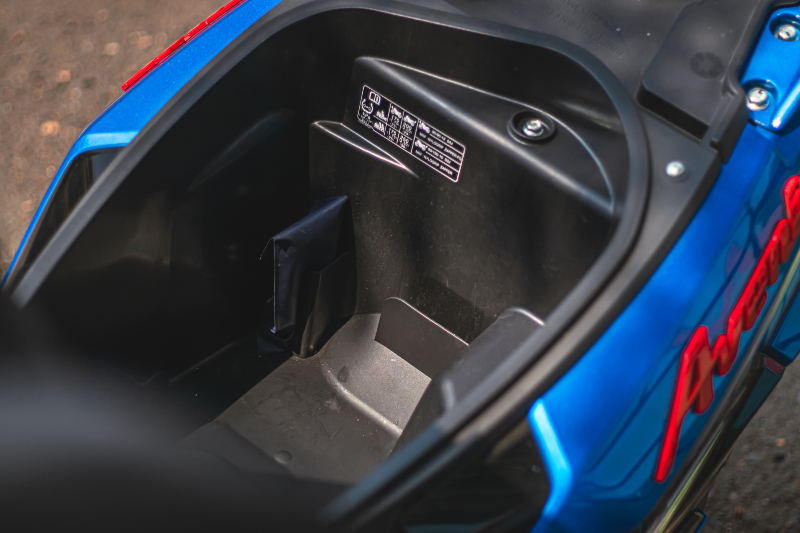

Suzuki Avenis 125 vs TVS Ntorq 125 Race XP: Brothers At War!


Subtlety isn’t one of our generations’ strongest points. The Indian youth today wishes to stand out. They want to drift away from the mundane and plain-Jane offerings even when buying something as simple as a 125cc scooter. This is why Suzuki went back to the drawing board and gave us the Avenis 125. The Access 125 already had a potent motor to begin with, and all it needed was funky clothes to captivate the young minds of our country.
However, a perilous path lies ahead of the Avenis 125 as it will have to usurp the undistinguishable king of the 125cc gearless scooter segment – the TVS Ntorq 125 Race XP.
It is all about being loud when it comes to their styling. If you look at them from a distance, the overall styling of both the scooters looks quite familiar and we have to hand it out to the TVS Ntorq 125 for bringing some originality to the table.
This is because the Suzuki Avenis 125 has clearly taken major design cues from the Ntorq and has built on it. However, step closer to these scooters and the differences start getting more noticeable. The Avenis for instance, gets a small flyscreen neatly embedded on the handlebar assembly which provides it with a distinctive look.
The Avenis also has more cuts and creases splattered all across its bodywork but it is the Ntorq 125 that looks louder out of the two. This might be because of the tricolour livery that is reserved for the Race XP edition which also includes alloys painted in a bright red shade.
The Suzuki Avenis 125’s rear end too has clear design inspirations from the Ntorq 125 but unlike the Ntorq’s single-piece tail lamp, the Avenis has split lights. Since the Avenis has benchmarked the Ntorq in the aesthetic department, it would have been nice if it also borrowed its 12-inch rear wheel and fatter rubber because the rear overhang of the Avenis looks a bit disproportionate.
Our Avenis came draped in this MotoGP-inspired livery and including this sassy colour scheme, the Avenis is offered in five shades. The Ntorq on the other hand gives you the option to express yourself in a better way with its 12 different shades! The build quality of both the scooters leaves no room for complaint but it is the Ntorq that inches a little ahead with its faux carbon-fibre finished switchgear that looks more premium and sporty.
The Suzuki Access 125 always needed an athletic wardrobe to go along with its powertrain. Although the same 125cc engine also powers the Access 125 and the Burgman street, it fits like a glove when it comes to the Avenis.
Backed by healthy performance figures of 8.7hp and 10Nm, the Avenis is quick on its feet, just like the Access. Switching to the Race mode in the Ntorq Race XP will see this peppy little scooter put down 10.06bhp and 10.8Nm.
On paper, it is evident that the Ntorq will outrun the Avenis. However, when things get real, the Avenis puts itself forth as a sleeper. Allow us to explain.
The Avenis might have less grunt on paper but it also weighs less than the Ntorq. The Avenis tips the scale at 106kg, making it a whole 10kg lighter than the Ntorq. The Ntorq “feels” faster because of its peppy power delivery which is full of character and its bassy exhaust note also adds to the overall drama. On the other hand, riding on Japanese wizardry, the Avenis is refined yet fast. As fast as the Ntorq 125 Race XP, mind you! We did a lot of red light drag races and both the scooters went neck-to-neck. Bin them at a red light after it goes green and 70kmph on the speedo comes up in no time. They still keep pulling after that.
The Ntorq feels a bit livelier but the Avenis feels more composed out of the two. However, since the Avenis is being positioned as a sportier offering as compared to the Access, we wouldn’t have mind having a little more performance on tap at the cost of refinement.
The first thing that you notice after riding these scooters back to back is that the Avenis has a softer seat cushioning and it also has a roomier floorboard as compared to the Ntorq. Both the scooters offer a fairly upright riding stance but it is the Avenis that feels a bit roomier, thanks to its slightly higher positioned handlebar.
While tackling the urban jungle, the Avenis feels more active and playful as compared to the Ntorq. Majorly aided by its smaller 10-inch rear wheel and skinnier tyres, it is fun to tip the Avenis side to side. The Ntorq holds its own as well. It is backed by fatter rubber and a bigger 12-inch rear tyre that really provide the much-needed stability in the corners. For city runabouts, we were more inclined towards the Avenis because of its flickability.
The Avenis 125 feels a bit plusher as compared to the Ntorq Race XP. Ntorq’s stiffer suspension setup aids in its fun factor but it is the Avenis that feels a bit more balanced out of the two. Braking is one department where the Avenis shines like a supernova. It leaves very less to be desired in terms of feedback and bite. Although the Ntorq’s braking is potent too, the brakes feel a bit wooden as compared to the Avenis.
However sporty they might be, they are still gearless scooters that might turn into absolute workhorses at some point in their lives. Both the scooters offer a fairly identical 22-litres of underseat storage but the Ntorq slips ahead as it also offers a boot light.
The Ntorq keeps scoring points in the features department, particularly the Race XP variant which will get you a lot of bragging rights. It comes loaded with two Ride Modes and voice assist. You can pass them off as gimmicks but isn’t our generation all about living a rather gimmicky life?
Switch the Ntorq in the race mode and its instrument cluster gets brimmed with a host of information including last top speed, lap timer, lap distance and much more. It also gets Bluetooth connectivity because obviously!
The Avenis too, scores high in terms of practicality as it gets two gloveboxes neatly housed behind the apron which is not there on the Ntorq.
A Bluetooth-enabled fully-digital instrument console also shows average fuel economy which is a welcome addition and ups its practicality quotient by a fair margin. However, it misses out on a pass and hazard switch which the Ntorq gets.
Scrutinizing a winner out of these two proved to be tough as nails for us. Although we love the TVS Ntorq 125 Race XP for all the tech wizardry and grunty performance it brings to the table, at the end of the day, it was the Suzuki Avenis 125 which tucked at our heartstrings. Blame it on its refined motor, streamlined looks or its ride quality, the Suzuki Avenis 125 feels a bit more composed out of the two while still offering peppy performance. However, if you are hunting for a sporty 125cc gearless scooter, take our word for it- You cannot go wrong with either of these offerings.